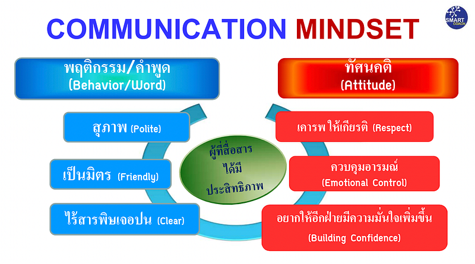

Training “Smart Feedback for Building People Capacity”
ขอขอบคุณผู้สอน Montri Saengpattrachai, M.D.
Professional Certified Coach, Executive and Leader Coach
ขอขอบคุณทางบริษัท ที่ได้จัดอบรมคอร์สนี้ เพื่อให้พนักงานได้นำความรู้มาทบทวนตัวเอง ซึ่งสามารถนำมาใช้ได้จริง และกิมอยากเล่าส่วนที่กิมชอบมากที่สุด 3 เรื่องค่ะ
1. KPI of Feedback?
2. Communication Mindset
3. 5 Tips for giving Productive Feedback
เรื่องที่ 1. KPI of Feedback?
เป็นคำถามที่ผู้สอนถามทุกคนในคลาส เป็นคำถามที่สร้างคำตอบภายในหัวเยอะทีเดียวค่ะ และคำตอบก็คือ การยอมรับค่ะ เพราะถ้าผู้รับ feedback ไม่ยอมรับ ก็จะไม่เกิดการเปลี่ยนแปลง ซึ่งการยอมรับที่จะสร้างพลังในการเปลี่ยนแปลงได้ ต้องเป็นการยอมรับจากตัวผู้รับ feedback เองเท่านั้น
เรื่องที่ 2. Communication Mindset
พฤติกรรมต่างๆ ของคนเราแสดงออกมาจากทัศนคติ ถ้าเรามีทัศนคติเชิงบวกเป็นพื้นฐานในการสื่อสาร เราสามารถมั่นใจได้ระดับนึงเลยว่า การสื่อสารของเราจะไม่ไปทำร้ายผู้รับ feedback ค่ะ

เรื่องที่ 3. Five Tips for giving Productive Feedback
ถือว่าเป็น check list ที่ช่วยให้เราได้ทบทวนก่อนทำ feedback ได้เป็นอย่างดีเลยค่ะ
Tip 1) Create safety : เราต้องสร้างความรู้สึกปลอดภัยให้กับผู้รับ feedback ก่อนเป็นอันดับแรก เช่น สื่อสารชัดเจนจริงใจ หรือให้คำมั่นว่าทุกอย่างที่คุยกันจะเป็นความลับ เป็นต้น ในส่วนนี้ถ้าเป็นคนที่อยู่ในทีมเดียวกันอยู่แล้ว กิมคิดว่ามันคือการสร้าง trust ที่เรามีให้กันภายในทีมอยู่แล้วค่ะ ซึ่งไม่ได้สร้างได้ภายในวันเดียว แต่เป็นสิ่งที่เราสร้างให้กันสะสมเอาไว้ และต้องใช้เวลา
Tip 2) Be positive : การเริ่มต้นประโยคด้วยการชวนคุยในเรื่องดีๆ ถือว่าสำคัญมากค่ะ เป็นการสร้างบรรยากาศดีๆ ในการเริ่มต้นสนทนา เราสามารถตั้งคำถามดีๆ หรือชวนคุยในสิ่งที่ specific ของผู้รับ feedback เพื่อยืนยันให้ผู้รับ feedback เห็นว่า เราใส่ใจเค้า
Tip 3) Be specific :
>> เข้าประเด็นจุดแข็งข้อดีของผู้รับ feedback
>> เข้าประเด็นปัญหาเจาะจงให้ตรงจุดให้มากที่สุด เพื่อให้เข้าใจง่าย และนำไปใช้ปรับปรุงแก้ไขได้จริง บอกพฤติกรรมที่อยากเห็นหรือไม่อยากเห็นให้ชัดเจน
Tip 4) Be immediate : มีสองสิ่งที่ต้องทำทันที ห้ามรอ คือ คำชม และคำขอบคุณ
#คำชมให้ชมทันที ไม่รอ ไม่เก็บไว้ก่อน
#ชมต่อหน้า ชมลับหลัง ชมซ้ำได้ ชมได้หลายครั้ง ชมได้หลายช่องทาง
#การชมทำให้เกิดความสุข (จากฮอร์โมนออกซิโทซิน)
#การชมมี 2 ระดับ คือ ชมที่ผลลัพธ์ และชมที่ตัวตน ไปให้ถึงทั้งสองระดับ เช่น เอกสาร Test case ที่เตรียมมาครบถ้วนสมบูรณ์มาก ครอบคลุมครบทุกเคสเลย แสดงให้เห็นถึงความเป็นคนละเอียดรอบคอบในการทำงานอย่างมาก เป็นต้น
Tip 5) Be tough, not mean : ต้องไม่ใจร้าย ไม่ทำให้ใครเสียหน้า ตัดสินงานได้แต่อย่าตัดสินคน เคารพทุกความคิด
จริงๆ ผู้สอนมีเทคนิค เครื่องมือ และกระบวนการอีกหลายอย่างที่สอนในคลาสค่ะ รวมถึงแบบฝึกหัดให้ได้ลองคิดลองทำ เราเอาไว้ต่อกันในบทความหน้านะคะ
ขอบคุณผู้อ่านค่ะ